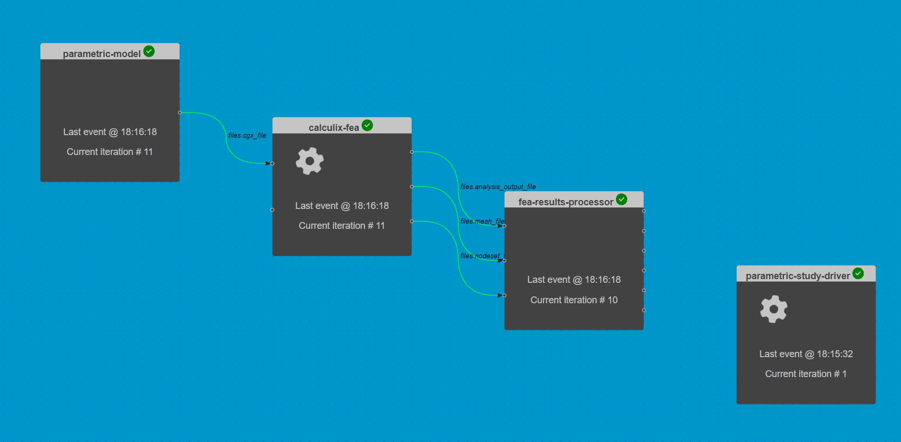

Automating the composite wing model parametric study
Contents
Automating the composite wing model parametric study#
Duration: 15 min
Driver components can be used to automate complex analysis workflows.
In this tutorial, we automate the execution of a parametric study using the chained component analyses from the previous example.
>> The files for this tutorial are now on Github.
{kind=link}
Opening a saved session#
Start by loading the session file from the previous example.
Select Open from the interface controls to load the JSON formatted version of our previous session (dapta_input.json).
Alternatively, copy the JSON object below into a text editor and save it locally, then select Open to load it.
Three connected components should appear in the workspace.
dapta_input.json
{
"components": [
{
"name": "parametric-model",
"api": "generic-python3-comp:latest",
"options": {},
"parameters": {
"user_input_files": [],
"span": 2.0,
"chord": 0.2,
"filled_sections_flags": false,
"airfoil_csv_file": "naca0012.csv",
"nele_foil": [
10,
10
],
"nele_span": 40,
"node_merge_tol": 0.002,
"cgx_ele_type": 10,
"cgx_solver": "abq",
"boundary_conditions": {
"fix_lines": [
0,
1
],
"loaded_lines": [
5,
6
]
}
},
"outputs": {
"files.cgx_file": "default"
}
},
{
"name": "calculix-fea",
"api": "calculix-fea-comp:latest",
"options": {},
"parameters": {
"user_input_files": [],
"analysis_file": "ccx_static_tip_shear.inp",
"mesh_file": "all.msh",
"filled_sections_flags": false,
"shell_set_name": {
"aero": "Eall"
},
"composite_plies": [
{
"id": "p_0",
"thickness": 0.0002,
"material": "EL",
"orientation": "ORI_0"
},
{
"id": "p_90",
"thickness": 0.0002,
"material": "EL",
"orientation": "ORI_90"
}
],
"orientations": [
{
"id": "ORI_0",
"1": [
0.0,
1.0,
0.0
],
"2": [
-1.0,
0.0,
0.0
]
},
{
"id": "ORI_90",
"1": [
1.0,
0.0,
0.0
],
"2": [
0.0,
1.0,
0.0
]
}
],
"composite_layup": {
"aero": [
"p_90",
"p_0",
"p_0",
"p_0",
"p_90",
"p_90",
"p_0",
"p_0",
"p_0",
"p_90"
]
},
"composite_props_file": "composite_shell.inp"
},
"inputs": {
"files.cgx_file": "default",
"fibre_rotation_angle.ORI_0.1": 0.0
},
"outputs": {
"files.analysis_output_file": "default",
"files.mesh_file": "default",
"files.nodeset_file": "default"
}
},
{
"name": "fea-results-processor",
"api": "generic-python3-comp:latest",
"options": {},
"parameters": {
"user_input_files": [],
"Ux": 0.0,
"Uy": 0.0,
"Uz": 0.0,
"Rx": 0.0,
"Ry": 0.0,
"Rz": 0.0
},
"inputs": {
"files.analysis_output_file": "default",
"files.mesh_file": "default",
"files.nodeset_file": "default"
},
"outputs": {
"Ux": "default",
"Uy": "default",
"Uz": "default",
"Rx": "default",
"Ry": "default",
"Rz": "default"
}
}
],
"connections": [
{
"origin": "parametric-model",
"name_origin": "files.cgx_file",
"target": "calculix-fea",
"name_target": "files.cgx_file",
"type": "implicit"
},
{
"origin": "calculix-fea",
"name_origin": "files.analysis_output_file",
"target": "fea-results-processor",
"name_target": "files.analysis_output_file",
"type": "implicit"
},
{
"origin": "calculix-fea",
"name_origin": "files.mesh_file",
"target": "fea-results-processor",
"name_target": "files.mesh_file",
"type": "implicit"
},
{
"origin": "calculix-fea",
"name_origin": "files.nodeset_file",
"target": "fea-results-processor",
"name_target": "files.nodeset_file",
"type": "implicit"
}
],
"workflow": {
"start": "parametric-model",
"end": "fea-results-processor"
}
}
The question marks next to the component names indicate that they are missing some data.
To fully define them, we need to upload all the components’ setup.py, compute.py, requirements.txt and user input files, as described in the previous example.
Here are quick links to the file contents available under the Chaining component analyses example:
Once the files are uploaded, check that the all components are valid. There should be green tick marks next to the component names in the workspace view.
Automating a parametric study#
What is the effect of changing the composite material properties on the deflections at the tip of the wing?
To answer this question, we can perform a parametric study.
We execute the chained analyses for a range of composite property inputs and record the output average wing tip deflections and rotations.
This example is based on the pure python implementation in Reference 1.
The driver component#
The design variable of interest is the calculix-fea input variable fibre_rotation_angle.ORI_0.1, which was previously set to zero (fibres aligned with the wing span direction).
The driver compute.py function has to perform the following tasks:
iterate over a range of variable values, where the range is defined through the component
Parameterstab valuesrotation_min(-10 degrees) torotation_max(10 degrees), with increments ofrotation_inc(5 degrees);in each iteration, the
run_workflowfunction is called to execute the chained component analyses with the current variable value;finally, the plotting function (
_plot_study_results) generates a line plot of the wing tip deflections as a function of variable value.
Note
Note that the parametric-model component executes in each workflow iteration, even though it’s inputs do not change.
To reduce the overhead associated with this component, we could move the parametric-model compute function logic into the setup function, which is only executed once.
To create the driver component:
Right-click in the workspace and select
Add Empty Node. Select the empty component to edit it.In the
Propertiestab, fill in the component name,parametric-study-driver, and select the component APIgeneric-python3-driver:latest.Copy the contents of the
setup.py,compute.py,requirements.txtfiles from below into a text editor, save them locally. Then upload them under thePropertiestab.In the
Propertiestab check the box next to theDriveroption.Copy the contents of the parameters JSON object below into the
Parameterstab text box.Select
Save datato save and close the component.
from datetime import datetime
from pathlib import Path
def setup(
inputs: dict = {"design": {}, "implicit": {}, "setup": {}},
outputs: dict = {"design": {}, "implicit": {}, "setup": {}},
parameters: dict = {
"user_input_files": [],
"inputs_folder_path": "",
"outputs_folder_path": "",
},
) -> dict:
"""Editable setup function."""
message = f"{datetime.now().strftime('%Y%m%d-%H%M%S')}: Setup completed."
return {"message": message}
from datetime import datetime
from pathlib import Path
from component_api2 import call_compute
import matplotlib.pyplot as plt
def compute(
inputs: dict = {"design": {}, "implicit": {}, "setup": {}},
outputs: dict = {"design": {}, "implicit": {}, "setup": {}},
partials: dict = {},
options: dict = {},
parameters: dict = {
"user_input_files": [],
"inputs_folder_path": "",
"outputs_folder_path": "",
},
) -> dict:
"""Editable compute function."""
workflow = parameters["workflow"]
component_inputs = parameters["component_inputs"] # note: params not accessible
run_folder = Path(parameters["outputs_folder_path"])
study_results = []
parameter_values = []
rotation_min = float(parameters["rotation_min"])
rotation_inc = float(parameters["rotation_inc"])
rotation_max = float(parameters["rotation_max"])
if "calculix-fea" in component_inputs:
rotation = rotation_min
while rotation <= rotation_max:
# update rotation input variable
component_inputs["calculix-fea"]["fibre_rotation_angle.ORI_0.1"] = rotation
(msg, output) = run_workflow(workflow, component_inputs)
if not "outputs" in output:
raise ValueError(
"Cannot find 'output' dictionary in run_workflow output."
)
study_results.append(output["outputs"]["design"])
parameter_values.append(rotation)
rotation += rotation_inc
_plot_study_results(
study_results,
x=parameter_values,
y=["Uz", "Ry"],
saveas=str(run_folder / "results_plot"),
)
else:
(msg, output) = run_workflow(workflow, component_inputs)
print("Parametric study completed.")
message = f"{datetime.now().strftime('%Y%m%d-%H%M%S')}: {msg}"
print(message)
return {"message": message}
def run_workflow(workflow, component_inputs):
"""Execute the workflow components in the same way the Orchestrator would do."""
msgs = ""
for component in workflow:
indict = {
"component": component,
"get_grads": False,
"get_outputs": True,
}
if component in component_inputs:
indict["inputs"] = {
"design": component_inputs[component],
"implicit": {},
"setup": {},
}
(msg, output) = call_compute(indict)
print(msg)
msgs += msg + "\n"
# only return the last output captured
return (msgs, output)
def _plot_study_results(
output: list, # list of dictionaries
x: list, # x-values
y: list, # key of y-values
xlabel="ply rotation angle (deg)",
ylabel="displacements (m) or rotation (rad)",
saveas=None,
):
y_series = []
for result in output:
if len(y) == 1 and isinstance(result[y[0]], list):
if len(output) > 1:
y_series.append(result[y[0]])
else:
y_series = result[y[0]]
else:
y_series.append([result[label] for label in y])
lineObjects = plt.plot(x, y_series)
plt.xlabel(xlabel)
plt.ylabel(ylabel)
plt.legend(iter(lineObjects), y)
if saveas:
plt.savefig(saveas + ".png")
plt.savefig(saveas + ".pdf")
plt.show()
return {
"x_label": "rotation_angles",
"x_values": x,
"y_labels": y,
"y_values": y_series,
}
matplotlib == 3.5.2
{
"component_inputs": {
"calculix-fea": {
"fibre_rotation_angle.ORI_0.1": 0
}
},
"driver": {
"type": "custom"
},
"rotation_inc": 5,
"rotation_max": 10,
"rotation_min": -10,
"user_input_files": []
}
Execute the workflow#
We can now execute the parametric study by selecting the play symbol ▶ in the Run controls interface.
Once the run has started, each component will setup and then execute one at a time. The setup order is arbitrary, but the compute functions will always be executed from the ‘Start Node’ to the ‘End Node’ (see dashboard Reference section for details).
The Run should complete after 5 iterations of the connected components (or 1 iteration of the parametric-study-driver component).
Inspect the outputs#
The Run log summarises the output of the components. Open the log by selecting View Log in the interface controls.
We can see that each component’s compute function was executed 5 times. The “run_output” (at the end of the log) lists the compute output messages for the 5th workflow iteration only.
Next, close the Run log and select the parametric-study-driver component.
Then select the Log tab and click on download files snapshot.
The parametric study outputs are visibly summarised in the ‘results_plot.png’ and ‘results_plot.png’ plots in the ‘outputs’ folder.

Clean-up#
Delete your session by selecting New in the interface.
It may take a minute or so for the Cloud session to be reset.